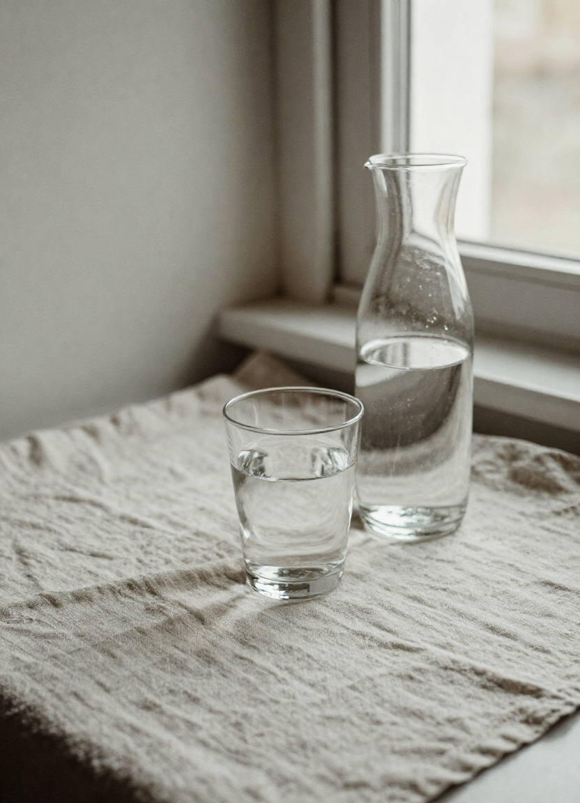
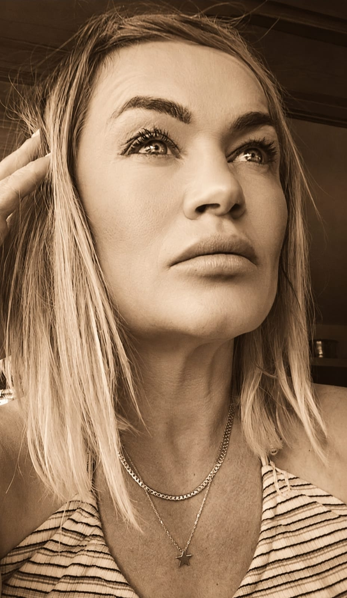

Bien-être · à domicile ou chez Fanny · Tarn-et-Garonne
Des soins pour relâcher, alléger, reprendre soin de soi.
Massage bien-être, drainage lymphatique, madérothérapie et EMS, autour de Saint-Nicolas-de-la-Grave. Chez vous ou dans mon espace de soins — vous choisissez simplement le cadre qui vous convient.
Prenez soin de vous ♡
Les soins
Quelques façons de
prendre soin de vous.
Chaque soin répond à un besoin différent : alléger, tonifier, relâcher ou remettre le corps en mouvement. Découvrez les formats et choisissez celui qui correspond à vos priorités du moment.
Drainage lymphatique
manuel
Chaque corps est différent. Je propose plusieurs formats de drainage, pour que vous puissiez choisir une séance adaptée à vos besoins, à votre temps et à votre budget. Les zones travaillées sont définies ensemble avant la séance.
Un format concentré sur une zone prioritaire, idéal pour découvrir le drainage ou répondre à un besoin localisé.
Réserver →Plusieurs zones sélectionnées ensemble selon vos sensations et vos priorités. Plus complet, sans nécessairement travailler le corps entier.
Réserver →Une séance globale et approfondie : plusieurs zones, avec davantage de temps, de précision et de continuité.
Réserver →Le drainage lymphatique est une prestation de bien-être. Il ne remplace pas un diagnostic, un traitement ou un suivi médical.
Madérothérapie
Un modelage corporel réalisé avec différents instruments en bois. Les gestes, les outils et l'intensité sont adaptés aux zones travaillées et à votre sensibilité — ventre, taille, hanches, cuisses, fessiers, jambes ou bras. Seule, ou associée au drainage pour un travail plus complet.
Avant la séance, je prépare une huile de massage adaptée, associant huiles végétales et, lorsque cela convient, une sélection d'huiles essentielles. Une alternative sans huiles essentielles est toujours possible.
Concentrée sur une zone précise. Les instruments et les gestes sont choisis selon la zone et votre sensibilité. Idéal pour découvrir.
Réserver →Une séance plus complète sur plusieurs zones choisies ensemble. Davantage de temps pour alterner les instruments et adapter les gestes.
Réserver →La douceur du drainage associée à un travail de madérothérapie plus tonique. La répartition du temps est personnalisée.
Réserver →Les durées correspondent au temps de soin effectif ; l'accueil et la préparation sont prévus en complément. La madérothérapie et le drainage sont des prestations de bien-être — ils ne remplacent pas un suivi médical.
Séance EMS
personnalisée
L'EMS accompagne le travail musculaire grâce à une combinaison sans fil, dont l'intensité est réglée progressivement selon votre confort. En mouvement, debout ou allongée, selon votre niveau et vos objectifs. Chaque séance est encadrée du début à la fin — sans chercher la performance à tout prix.
Un format ciblé pour découvrir l'EMS, reprendre progressivement une activité ou travailler un objectif précis.
Réserver →Plus de temps pour l'échauffement, les exercices, l'adaptation des intensités et la récupération.
Réserver →L'EMS est-elle faite pour moi ? — Vous n'avez pas besoin d'être sportive ou déjà en forme. La séance part de votre niveau actuel et de vos capacités du jour, pour progresser étape par étape, avec un cadre sécurisant et une intensité toujours réglée avec vous.
« L'important n'est pas ce que votre corps est capable de faire aujourd'hui.
L'important est de partir de là où il en est. »
Massage
fatigue & stress
Pensé pour les périodes où la fatigue physique et mentale s'accumule. Des mouvements lents, progressifs et enveloppants aident le corps à relâcher les tensions et à retrouver le calme. La pression est adaptée à votre sensibilité — dos, épaules, nuque, bras ou jambes selon vos besoins. Un véritable temps de récupération, sans protocole rigide.

Un massage personnalisé du corps, aux mouvements lents et enveloppants. Pour celles et ceux qui ressentent le besoin de ralentir et de relâcher les tensions accumulées.
Réserver →Femmes : dans mon espace bien-être ou à votre domicile, selon votre préférence. Hommes : cette prestation est proposée uniquement dans mon espace bien-être. Un massage de bien-être et de relaxation — il ne constitue pas un acte médical ou kinésithérapeutique et ne remplace pas un suivi auprès d'un professionnel de santé.
Plusieurs fois par an
Les Challenges Signature
Des programmes de quatre semaines, pour celles qui souhaitent aller plus loin qu'une séance ponctuelle : retrouver une routine, reprendre confiance dans ses capacités, remettre du mouvement dans le quotidien — dans un cadre régulier et adapté. L'objectif n'est pas de vous pousser toujours plus, mais de construire une progression réaliste et motivante.

La praticienne
Derrière Fanny Therapist,
il y a une personne.
Avant les soins, il y a quelqu'un. Moi, c'est Fanny. J'ai à cœur de prendre soin des autres avec présence, écoute et attention — et une approche construite à partir de mes formations corporelles, de mon expérience et de l'observation de chaque personne.
Je ne cherche pas à appliquer mécaniquement un protocole identique. J'adapte les gestes, le rythme et les zones travaillées selon ce que votre corps exprime le jour de la séance. Je vous reçois dans mon espace bien-être ou me déplace chez vous — l'essentiel est que vous vous sentiez en confiance, du début à la fin.
Fanny
Votre rendez-vous
Comment se déroule
votre séance.
Avant la séance
Un échange pour comprendre vos attentes, vos sensations du jour et les éventuelles précautions à respecter.
Pendant le soin
Le rythme, la pression, les zones travaillées et le déroulement sont adaptés à la prestation et à votre confort.
Après la séance
Vous prenez le temps de vous relever tranquillement. Quelques conseils simples peuvent vous être transmis lorsque c'est utile.
Les durées annoncées correspondent au temps de soin effectif. L'accueil, l'installation, la préparation et le nettoyage du matériel sont prévus en complément.
Tarifs
Des soins clairs,
sans surprise.
Déplacements à domicile
- Déplacement offert jusqu'à 15 km autour de Saint-Nicolas-de-la-Grave.
- De 15 à 30 km : supplément de 10 €.
- Au-delà de 30 km : tarif communiqué avant confirmation, sans surprise.
Où l'on se retrouve
À domicile, ou dans
un espace dédié.
Votre commune n'apparaît pas ? Écrivez-moi : le tarif du déplacement vous est communiqué avant la confirmation.
Avis & témoignages
Les retours de mes clientes.
Retrouvez les avis laissés par les personnes que j'ai accompagnées, directement sur ma fiche Google Business.
Consulter mes avis Google →Questions fréquentes
Tout ce que vous voulez
savoir avant.
Comment se déroule un premier rendez-vous ? +
Selon la prestation, le rendez-vous a lieu dans mon espace bien-être à Saint-Aignan ou à votre domicile. Avant la séance, nous prenons quelques minutes pour échanger sur vos attentes, vos sensations et les précautions éventuelles. J'apporte et prépare le matériel lorsque je me déplace.
Les soins sont-ils ouverts aux hommes et aux femmes ? +
Oui, la plupart des soins sont ouverts à toutes et tous. Le massage fatigue & stress pour la clientèle masculine est proposé uniquement dans mon espace bien-être.
Faut-il un certificat médical ? +
Ce sont des prestations de bien-être, non médicales. En cas de situation particulière (grossesse, souci de santé, suivi en cours), parlez-en à votre médecin, et signalez-le-moi avant la séance pour que j'adapte ou reporte si besoin.
Combien de séances faut-il prévoir ? +
Il n'y a pas de nombre imposé. Certaines personnes viennent ponctuellement, d'autres régulièrement. On avance à votre rythme, selon vos sensations — sans abonnement ni engagement.
Comment réserver ? +
Écrivez-moi (téléphone, SMS, WhatsApp ou e-mail) en indiquant le soin envisagé et vos disponibilités. Je vous recontacte pour confirmer le format, le lieu et le créneau.
Jusqu'où vous déplacez-vous ? +
Autour de Saint-Nicolas-de-la-Grave. Déplacement offert jusqu'à 15 km, supplément de 10 € entre 15 et 30 km, au-delà tarif communiqué avant confirmation.
Prenez rendez-vous
Réserver, ou simplement
poser une question.
Envoyez-moi un message en indiquant le soin envisagé et vos disponibilités. Je vous recontacte pour confirmer le format, le lieu et le créneau. Je vous rappelle dans la journée.